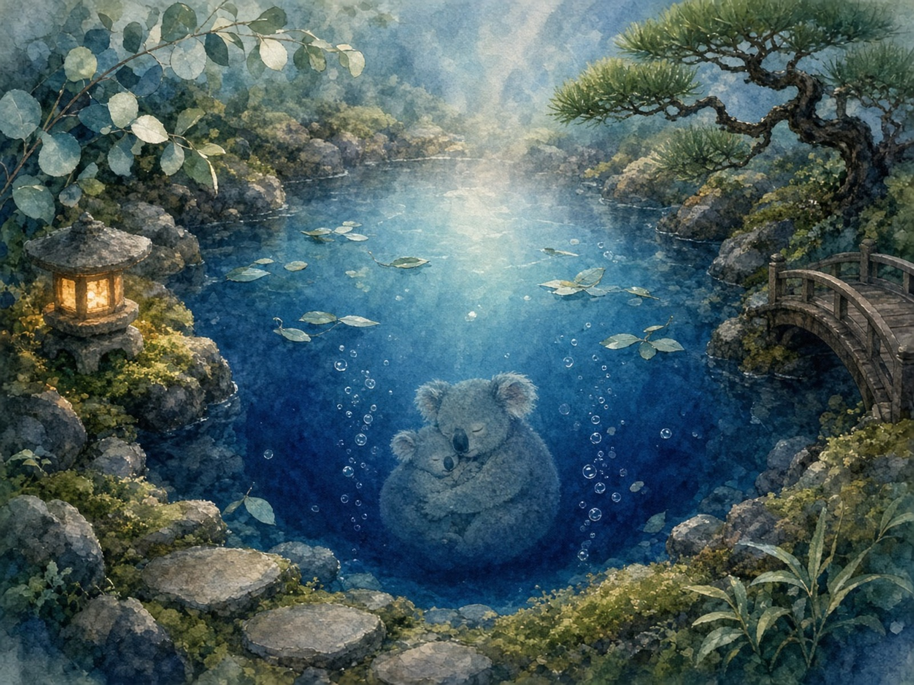

深海を抱いた池
池の生地、庭の額縁作者: 超アポロン

池の布地をのぞいたら、空じゃなくて深海がうつってたの。泡がのぼって、ユーカリの葉っぱが舟みたいにうかんで、いちばん底でコアラの親子がまるくなってねむってる。石と苔と灯籠と小さな橋が、そのねむりをそっと囲む額縁だよ。
池の生地、庭の額縁作者: 超アポロン

池の布地をのぞいたら、空じゃなくて深海がうつってたの。泡がのぼって、ユーカリの葉っぱが舟みたいにうかんで、いちばん底でコアラの親子がまるくなってねむってる。石と苔と灯籠と小さな橋が、そのねむりをそっと囲む額縁だよ。